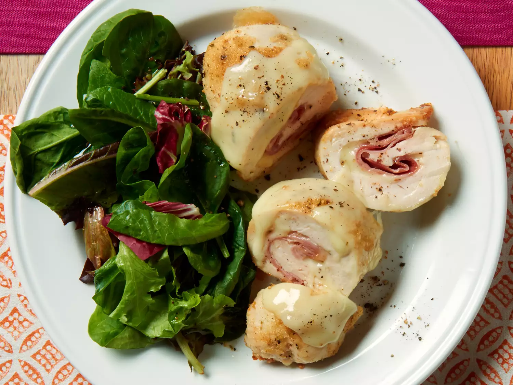

Cordon Bleu

Description
This entree is easy and delicious! It's one of my husband's favorites! Try to use the largest chicken breasts you can find so you'll be able to roll them easier.
Ingridients
- Noodles: This chicken cordon bleu casserole recipe starts with a package of wide egg noodles.
- Chicken and ham: You'll need cooked, cubed chicken and cooked, cubed ham. This is a great use for leftover meat, if you have it.
- Cheese: Melt Swiss cheese alongside the chicken and ham in the casserole. Parmesan cheese is essential for the crispy topping.
- Soup: The creamy sauce starts with a can of reduced-fat, reduced-sodium cream of chicken soup. Of course, you can make your own cream of chicken soup at home.
- Milk and sour cream: Finish the creamy sauce with equal parts 2% milk and sour cream.
- Butter: Cook the bread crumbs and Parmesan in hot butter.
- Bread crumbs: Use store-bought seasoned bread crumbs or make your own at home.
Steps
- Boil and drain the noodles, then transfer to a prepared casserole dish.
- Top the noodles with chicken, ham, and Swiss cheese.
- Combine the soup, milk, and sour cream in a bowl, then spoon over the noodle mixture.
- Make the topping and sprinkle it over the casserole.
- Bake until the casserole is bubbling and lightly browned.